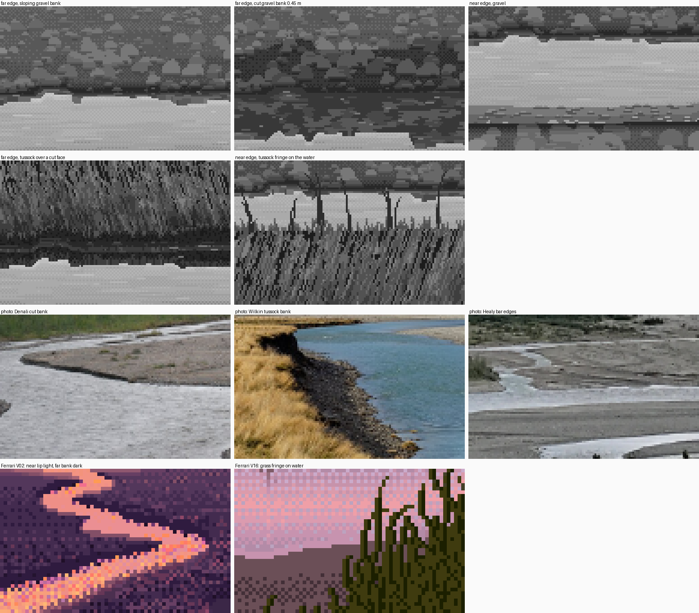
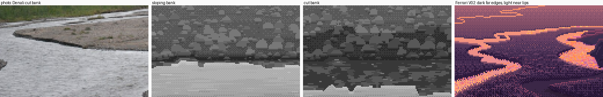
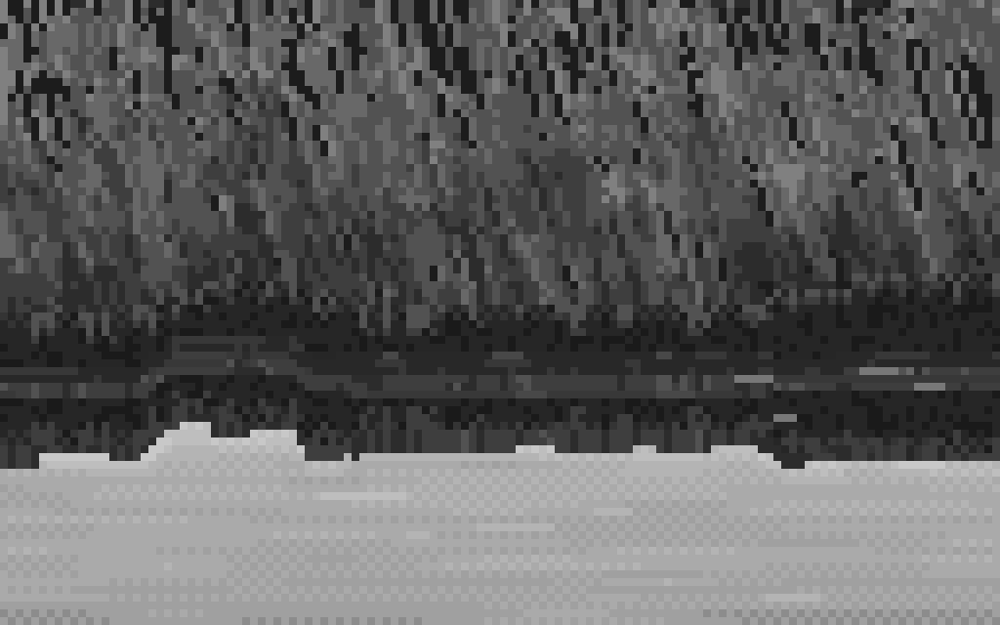

4. The edges: near light, far dark, and nothing drawn as a dotted line
What it's for. The edge is where water meets bank, and it does half the drawing of a channel. It has a fixed order of parts, and V02 and the photos agree on it:
- far edge, top to bottom: the bank → the wet foot, darkening over the last rows → the darkest contact row → the bank's reflection (a sliver, or tall for a cut bank) → the sheen;
- near edge, top to bottom: the open mirror → a see-in shelf where the bed shows → a broken light lap line → the wet margin → dry bank.
Code: the ground and water blocks of paint() in code/painter.py; the cells in code/s2_edges.py.

The five edge cells from my stage 2 (grey, 128×80 at 4×), then photos and his V02.
Step 1. Measure the order first
In his V02 index map, rows from the water (how-to 1, step 4):
far bank (rows above water, 1..7): 61 60 65 69 74 75 76 luma
near bank (rows below water, 1..7): 100 78 66 65 63 64 68
In the photos, the Denali cut bank and the Healy bars both show the far edge as one thin dark line at a distance, and the near edges as a pale lip.

nb051. The Denali bar edge: a dark undercut line along the far side, and pale water right up to the near gravel.

nb088. Healy: at a distance every bar edge is a dark hairline over bright water.

The Denali photo, my sloping and cut far banks, and his V02, at 3×. figs.py fig_edge_triptych.
Step 2. The wet foot comes from height, and the gravel painter carries it
Don't paint a wet band. Lower the value field of the ground by how close it sits to the water surface, and let the same gravel painter that paints the dry bank paint the wet foot. Then the texture continues and only the value changes:
wetness = np.clip(1 - G['y'] / prm['wet_h'], 0, 1) ** 1.5 # wet_h = 7 cm
base = base - prm['wet_drop'] * wetness * gm # wet_drop = 62 grey levels
...
g = ch.gravel(gm, base, zrow, cam.f, rng, grav_i, grav_v, prm['stones'], ...)
# the contact line: ground directly above water is the wet, darkest row (a flat run, never an
# ordered-dither row, which reads as a dotted line)
contact = gm & np.roll(kind == 2, -1, 0)
cv[contact] = np.where(rng.random((H, W)) < 0.85, grav_i[0], grav_i[1])[contact]
Faces toward the camera (a cut bank) get less sky and are darker: base *= 1 - 0.35 * clip(facing / 1.5, 0, 1).
Step 3. The near side: a shelf, stones, a lap line
Near the viewer the view is steeper and the water shallow, so you see into it. Paint that from depth bands, as flat tints, and only on the near margin (within 10 rows of the ground below):
inner = msh & (d < sh1) # sh1 = 5 cm
outer = msh & (d >= sh1) & (d < sh2) # sh2 = 13 cm
db_, _ = pk.col_dist(gm) # rows to the nearest ground BELOW: the near margin
near_side = db_ <= prm.get('shelf_rows', 10)
cv[inner & near_side] = wat_i[1]
cv[outer & near_side] = wat_i[2]
Because the terrain's edge breathes, the shelf's boundary steps by itself. Then scatter a few stones in the shelf: flat lozenges, 2–6 px, with a dark body and a sky-lit top row. Last, the lap line, on the last water row above the near bank. It's broken into short runs with gaps, and it's the lightest water tint:
last_water = wm & np.roll(gm, -1, 0) & near_side
runs = np.zeros(W, bool); x = int(rng.integers(0, 3))
while x < W:
L = int(rng.integers(2, 7)); runs[x:x + L] = rng.random() < prm['lap']; x += L + int(rng.integers(2, 8))
cv[last_water & runs[None, :]] = wat_i[4]
Each part switched off in turn, with the painter's own parameters:

The near-gravel cell at 5×: all parts on; no wet foot (the far bank's edge goes soft and the bank floats); no lap line; no shelf (the near edge becomes a cut-out).
Step 4. Glacial water is milky, and the edge depends on it
My first near edge was far too dark: the water there came out as dark as the gravel. I had computed the body as the bed seen through clear water, and close to the viewer, at steeper angles, the bed dominated. But braided rivers carry rock flour and are nearly opaque. So the body is the bed fading into the water's own pale milk with depth:
tvis = np.exp(-d / prm['visibility']) # visibility = 0.06 m for glacial water
body = prm['bed'] * tvis + prm['milk'] * (1 - tvis)
This one parameter is what makes a braid's channels bright ribbons rather than dark ditches. It's also a real axis of the subject: clear spring-fed side channels have visibility of half a metre or more and show their beds. See how-to 5 for the colour half.
Step 5. The same edge against grass
Under grass the cut face is earth: dark, with a lighter checker at the root mat, and lit blades drooping over the lip. The grass body uses Ferrari's lawn strands, ported verbatim from the master-copy student (strands / sheared_strands in code/channel.py): stacked runs of adjacent values, a stem paired with each highlight, and black gaps. The crest is dense 1-px ticks of random height. A fringe of single blades in clumps, with long gaps, fans over the water on the near side.

The far tussock over a cut face, at 8×.
This is the weakest part of this page. The critic's last word on it: "the tussock fringe is too even". Learn grass from the master-copy and grass students, and take only the edge rules from here.
Step 6. The trap: a single row of checker reads as a dotted line
I made this mistake five times in stage 1 alone: the far waterline, a checker row between the reflection and the sheen, the shelf's gradient, the wet foot, and the reflection's lower edge.

nb055. A strip at 8× with three rows of "Morse code": the meniscus line, the reflected foot, and the near lap line, each a dotted row.
Every boundary on this page is now either a flat tint with a stepped boundary (runs of 3–16 px), or a value change the texture carries (the wet foot). A row of alternating pixels is only a material when there are several rows of it.
Where it still falls short. The cut-bank cell is mostly bank and reflection, with little water: true to a 0.45 m bank seen from 1.6 m, but a weak picture. And his edges have "stepped bites", where the bank tongues into the water in notches 2–4 px deep. My breathing edges step cleanly, and where two runs meet at different depths they make little teeth.